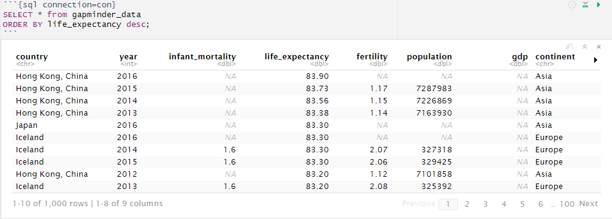
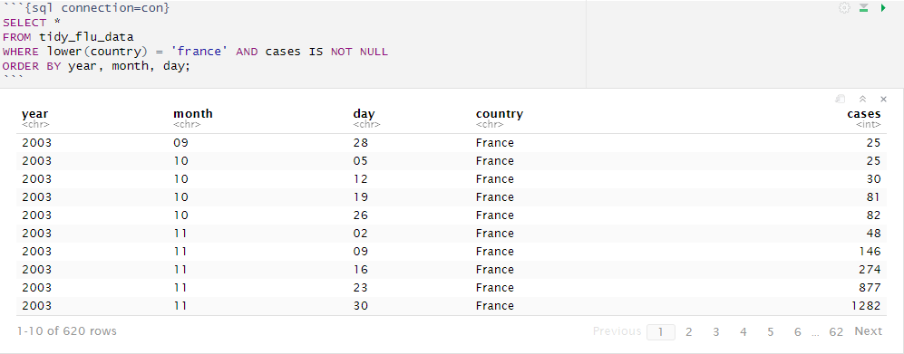
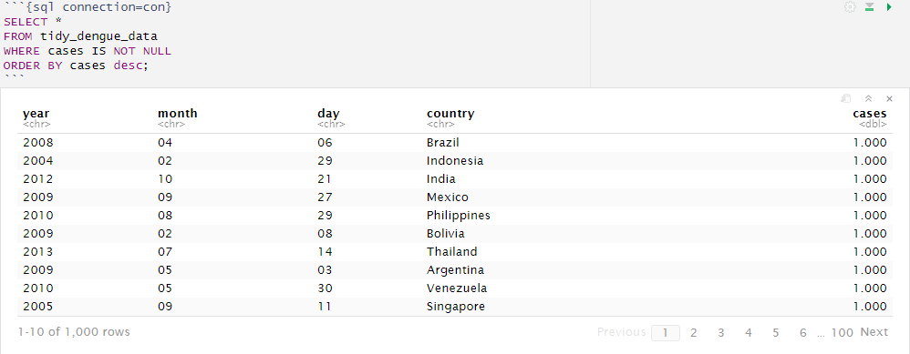
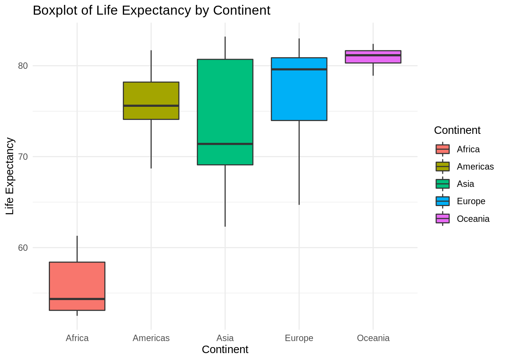
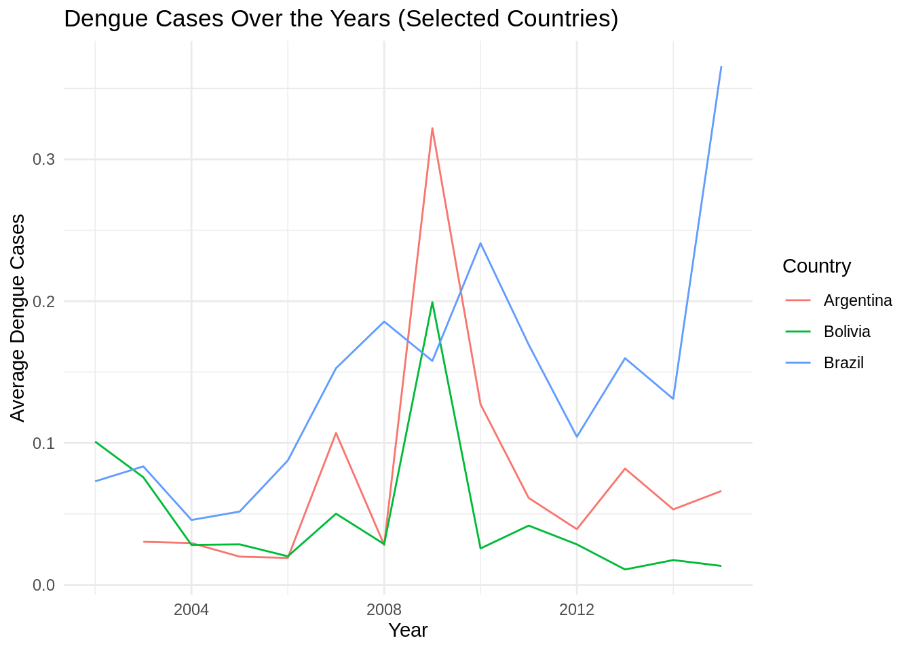
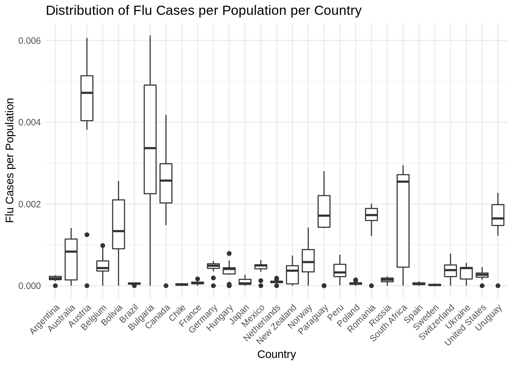

Chapter 5 SQL
N.B. some of the steps are done using an connection to a local postgres database, because these wouldn’t work in an R markdown they are replaced by screenshots.
5.1 Getting the data
First we need to get the data for the exercise, we use wget to download them from github.
# Go to data_raw
cd data_raw/
# Download the flu dataset
wget -O flu_data.csv https://raw.githubusercontent.com/DataScienceILC/tlsc-dsfb26v-20_workflows/main/data/flu_data.csv
# Download the dengue dataset
wget -O dengue_data.csv https://raw.githubusercontent.com/DataScienceILC/tlsc-dsfb26v-20_workflows/main/data/dengue_data.csv5.2 Tidy the data
Its important to make the data tidy so every table matches structure wise, in these steps we also make some changes to make merging later easier.
#load needed libraries
library(tidyr)
library(dplyr)
library(RPostgreSQL)
library(dslabs)# Load the different data
flu_data <- read.csv("data_raw/flu_data.csv", skip = 11) # skip = 11 to skip the first 11 lines which contain metadata
dengue_data <- read.csv("data_raw/dengue_data.csv", skip = 11)
gapminder_data <- as_tibble(gapminder)
## flu_data
# Make flu_data tidy
tidy_flu_data <- flu_data %>%
pivot_longer(cols = -Date, names_to = "country", values_to = "cases")
# Split Date into year, month, day
tidy_flu_data <- tidy_flu_data %>%
separate(Date, into = c("year", "month", "day"), sep = "-")
# Convert year into factor
tidy_flu_data$year <- as.factor(tidy_flu_data$year)
# flu_data uses dots instead of spaces in country names (New.Zealand)
# So to make joining the tables easier we need to replace the dots with spaces
tidy_flu_data$country <- gsub("\\.", " ", tidy_flu_data$country)
# turn country into factor
tidy_flu_data$country <- factor(tidy_flu_data$country)
# dengue_data
# Make dengue_data tidy
tidy_dengue_data <- dengue_data %>%
pivot_longer(cols = -Date, names_to = "country", values_to = "cases")
# Split Date into year, month, day
tidy_dengue_data <- tidy_dengue_data %>%
separate(Date, into = c("year", "month", "day"), sep = "-")
# Convert year into factor
tidy_dengue_data$year <- as.factor(tidy_dengue_data$year)
# turn country into factor
tidy_dengue_data$country <- factor(tidy_dengue_data$country)
# Save tidy_dengue_data
write.csv(tidy_dengue_data, "data/tidy_dengue_data.csv")
saveRDS(tidy_dengue_data, "data/tidy_dengue_data.rds")
# Save tidy_flu_data
write.csv(tidy_flu_data, "data/tidy_flu_data.csv")
saveRDS(tidy_flu_data, "data/tidy_flu_data.rds")
# Save clean gapminder_data
write.csv(gapminder_data, "data/tidy_gapminder_data.csv")
saveRDS(gapminder_data, "data/tidy_gapminder_data.rds")The chunck beneath is to create an connection object, that can be used to connect to a Postgres database.
# Load packages
library(RPostgreSQL)
library(DBI)
# Create connection object to connect to local PostgreSQL database
con <- dbConnect(RPostgres::Postgres(),
dbname = "workflowsdb",
host="localhost",
port="5432",
user="postgres",
password="PASSWORD")This chunck would normaly create tables in the postgres database.
# Load tidy_flu_data into Postgres database
dbWriteTable(con, "tidy_flu_data", as.data.frame(tidy_flu_data), overwrite = TRUE)
# Load tidy_dengue_data into Postgres database
dbWriteTable(con, "tidy_dengue_data", as.data.frame(tidy_dengue_data), overwrite = TRUE)
# Load gapminder_data into Postgres database
dbWriteTable(con, "gapminder_data", as.data.frame(gapminder_data), overwrite = TRUE)5.3 Using SQL and R to inspect data
We use both SQL and R to inspect the data in the same way
5.3.1 Gapminder
Here we order the gapminder data by life expactancy.  Using R with the same goal.
gapminder_data %>%
arrange(desc(life_expectancy))## # A tibble: 10,545 × 9
## country year infant_mortality life_expectancy fertility population gdp
## <fct> <int> <dbl> <dbl> <dbl> <dbl> <dbl>
## 1 Hong Kong,… 2016 NA 83.9 NA NA NA
## 2 Hong Kong,… 2015 NA 83.7 1.17 7287983 NA
## 3 Hong Kong,… 2014 NA 83.6 1.15 7226869 NA
## 4 Hong Kong,… 2013 NA 83.4 1.14 7163930 NA
## 5 Iceland 2014 1.6 83.3 2.07 327318 NA
## 6 Iceland 2015 1.6 83.3 2.06 329425 NA
## 7 Iceland 2016 NA 83.3 NA NA NA
## 8 Japan 2016 NA 83.3 NA NA NA
## 9 Hong Kong,… 2012 NA 83.2 1.12 7101858 NA
## 10 Iceland 2013 1.6 83.2 2.08 325392 NA
## # … with 10,535 more rows, and 2 more variables: continent <fct>, region <fct>5.3.2 Flu
Here we select only the cases in France from the flu data.  Again using R for the same goal.
tidy_flu_data %>%
filter(tolower(country) == 'france' & !is.na(cases)) %>%
arrange(year, month, day)## # A tibble: 620 × 5
## year month day country cases
## <fct> <chr> <chr> <fct> <int>
## 1 2003 09 28 France 25
## 2 2003 10 05 France 25
## 3 2003 10 12 France 30
## 4 2003 10 19 France 81
## 5 2003 10 26 France 82
## 6 2003 11 02 France 48
## 7 2003 11 09 France 146
## 8 2003 11 16 France 274
## 9 2003 11 23 France 877
## 10 2003 11 30 France 1282
## # … with 610 more rows5.3.3 Dengue
Here we sort dengue by cases from high to low.  And again R for the same goal.
tidy_dengue_data %>%
filter(!is.na(cases)) %>%
arrange(desc(cases))## # A tibble: 6,263 × 5
## year month day country cases
## <fct> <chr> <chr> <fct> <dbl>
## 1 2004 02 29 Indonesia 1
## 2 2005 09 11 Singapore 1
## 3 2008 04 06 Brazil 1
## 4 2009 02 08 Bolivia 1
## 5 2009 05 03 Argentina 1
## 6 2009 09 27 Mexico 1
## 7 2010 05 30 Venezuela 1
## 8 2010 08 29 Philippines 1
## 9 2012 10 21 India 1
## 10 2013 07 14 Thailand 1
## # … with 6,253 more rowsHere you can see that in every country, the highest case is 1 because the data is relative per country. The day where there were the most Google searches about dengue is labeled as one, and the day with the fewest is labeled as 0. Every other day is on the scale between those.
5.4 Summarzing flu and dengue
Both the flu and dengue data have datapoints every day, while gapminder has a datapoint for every year. Before we can join flu and dengue with gapminder we first have to summarize the data so flu and dengue to have a datapoint for every year.
For flu we can just take the total of every case, hence we use sum in the summarize function.
summarized_flu_data <- tidy_flu_data %>%
mutate(Date = as.Date(paste(year, month, day, sep = "-"))) %>%
group_by(country, year) %>%
summarize(total_cases_flu = sum(cases, na.rm = TRUE)) %>%
ungroup()For dengue, we need to calculate the average because the data is on a scale where 1 represents the highest search activity in a country, and 0 represents the lowest. Therefore, we use the mean function in the summarize function.
summarized_dengue_data <- tidy_dengue_data %>%
mutate(Date = as.Date(paste(year, month, day, sep = "-"))) %>%
group_by(country, year) %>%
summarize(avg_cases_dengue = mean(cases, na.rm = TRUE)) %>%
ungroup()Now we load the new summarized files into the database.
# Load summarized_flu_data
dbWriteTable(con, "summarized_flu_data", as.data.frame(summarized_flu_data), overwrite = TRUE)
# Load summarized_dengue_data
dbWriteTable(con, "summarized_dengue_data", as.data.frame(summarized_dengue_data), overwrite = TRUE)5.5 Merging the tables
Normally this could be used to merge the tables and load the table into R.
# SQL to merge tables
sql_query <- "
SELECT
COALESCE(d.country, f.country) AS merged_country,
COALESCE(d.year, f.year::text) AS merged_year,
d.avg_cases_dengue,
f.total_cases_flu,
g.*
FROM
summarized_dengue_data AS d
FULL JOIN
summarized_flu_data AS f ON d.year = f.year::text AND d.country = f.country
JOIN
gapminder_data AS g ON COALESCE(d.year, f.year::text) = g.year::text AND COALESCE(d.country, f.country) = g.country
ORDER BY
COALESCE(d.avg_cases_dengue, 0) DESC, COALESCE(f.total_cases_flu, 0) DESC;
"
# Export table to R
merged_table <- dbGetQuery(con, sql_query)
summary(merged_table)Because we can’t use SQL we just load the merged table in using R, and create a summary of the data.
merged_table <- readRDS("data/merged_table.rds")
summary(merged_table)## merged_country merged_year avg_cases_dengue total_cases_flu
## Length:490 Length:490 Min. :0.0108 Min. : 0
## Class :character Class :character 1st Qu.:0.0796 1st Qu.: 1696
## Mode :character Mode :character Median :0.1216 Median : 6772
## Mean :0.1363 Mean : 20147
## 3rd Qu.:0.1772 3rd Qu.: 24975
## Max. :0.5355 Max. :155577
## NA's :360 NA's :84
## country year infant_mortality life_expectancy
## Length:490 Min. :2002 Min. : 2.00 Min. :52.50
## Class :character 1st Qu.:2005 1st Qu.: 4.00 1st Qu.:73.20
## Mode :character Median :2008 Median : 7.60 Median :76.50
## Mean :2008 Mean :12.61 Mean :75.84
## 3rd Qu.:2012 3rd Qu.:15.88 3rd Qu.:80.50
## Max. :2015 Max. :62.00 Max. :83.20
##
## fertility population gdp continent
## Min. :1.150 Min. :3.324e+06 Min. :7.214e+09 Length:490
## 1st Qu.:1.430 1st Qu.:9.241e+06 1st Qu.:8.430e+10 Class :character
## Median :1.850 Median :3.001e+07 Median :2.193e+11 Mode :character
## Mean :1.945 Mean :8.865e+07 Mean :7.992e+11
## 3rd Qu.:2.288 3rd Qu.:8.051e+07 3rd Qu.:5.853e+11
## Max. :3.980 Max. :1.311e+09 Max. :1.174e+13
## NA's :141
## region
## Length:490
## Class :character
## Mode :character
##
##
##
## 5.6 Creating some plots
We now use the merged table to create some plots to visualize the data.
Create boxplot of life expectancy per continent.
library(ggplot2)
# Boxplot of Life Expectancy by Continent
ggplot(merged_table, aes(x = continent, y = life_expectancy, fill = continent)) +
geom_boxplot() +
labs(title = "Boxplot of Life Expectancy by Continent",
x = "Continent",
y = "Life Expectancy") +
theme_minimal() +
scale_fill_discrete(name = "Continent") Linegraph for dengue cases in Brazil, Argentina and Bolivia.
# chosen 3 random countries
selected_countries <- c("Brazil", "Argentina", "Bolivia")
filtered_data_dengue <- merged_table[merged_table$country %in% selected_countries, ]
# Line plot of Dengue cases for Brazil, Argentina and Bolivia
ggplot(filtered_data_dengue, aes(x = year, y = avg_cases_dengue, color = country)) +
geom_line() +
labs(title = "Dengue Cases Over the Years (Selected Countries)",
x = "Year",
y = "Average Dengue Cases",
color = "Country") +
theme_minimal()## Warning: Removed 1 row(s) containing missing values (geom_path). Flu cases per capita per country.
# Filter data to exclude NA values
filtered_data <- merged_table %>% filter(!is.na(total_cases_flu) & !is.na(population))
# Divide the cases by the population
filtered_data$flu_ratio <- filtered_data$total_cases_flu / filtered_data$population
# Create a box plot
ggplot(filtered_data, aes(x = merged_country, y = flu_ratio)) +
geom_boxplot() +
labs(title = "Distribution of Flu Cases per Population per Country",
x = "Country",
y = "Flu Cases per Population") +
theme_minimal() +
theme(axis.text.x = element_text(angle = 45, hjust = 1)) # Make readable